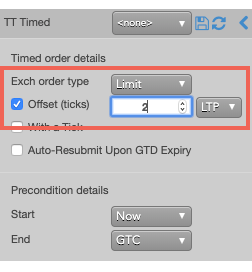

Timed orders are used to manage a trading day (e.g., exit by market close). For instance, you might want to submit an order as soon as the market opens, or exit a position just before the market closes. TT Timed order parameters schedule an order's start date and time and/or end date and time and may be included as part of all TT Order Type orders.
The following describes the life cycle of a {{page.title}}:
-
An order submitted with a Start Date/Time is in the Waiting state.
-
When the Start Date/Time is reached, the order goes into the Pending Trigger or Working state.
-
When the End Date/Time is reached, the Algo Server deletes the parent order and associated child orders. If the trading session is closed when the End Date/Time is reached, the delete request will fail, leaving working GTC child orders on the exchange. It is the user’s responsibility to delete these orders when the exchange re‐opens.
Note: Time in Force settings can override the End Date/Time. The Algo Server deletes timed orders when the exchange cancels the order. For example, when the exchange cancels GTD orders at the end of the trading session, the Algo Server deletes the order even if the End Date/Time has not been reached.
Behaviors
The following examples illustrate how you can configure a TT Timed order with different behaviors for the child and parent orders. Also, each example shows how the order will appear in MD Trader.
-
Setting preconditions for the parent order
-
Specifying the price at when child orders are entered
{% include tto-time-params.html %}
Setting the type and price of the child order
At the specified time, the TT Timerd order will submit a single native child order to the market at a specied type and price. You can choose the following types of native order types.
-
Market order
-
Limit order
You can choose to use same price as the parent order for each child order or to use a price offset based on the market at the time each child order is entered.
-
Market Limit Market (MLM) order
To configure the type and price of the child order:
-
In the Exch order Type dropdown, select the desired order type for the child orders.
If you select Limit, you can optionally specify enter a child order at a relative price using an offset.

With this setting, the child order will be entered at a price level two ticks away from the LTP at that time.
{% include tto-wat-params.html %}
TT Timed order parameters
The following parameters are required:
- {% include Parameters/ExchangeOrderType_Details.html %}
- {% include Parameters/OffsetTicks_Details.html %}
- {% include Parameters/WithATick.html %}
- {% include Parameters/AutoResubmit_Details.html %}
- {% include Parameters/StartTime_Details.html %}
- {% include Parameters/EndTime_Details.html %}
- {% include Parameters/EndTimeAction_Details.html %}